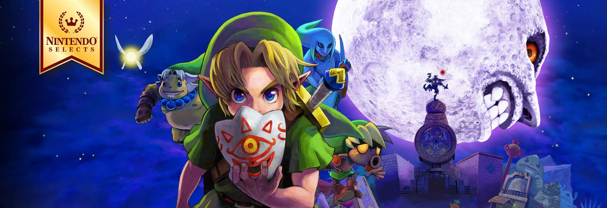

-
The legend of zelda skyward sword
Narra el origen de la Espada Maestra y la eterna lucha entre Link, Zelda y el malvado Demise.
-
The legend of zelda minish cap
Link encoge de tamaño con la ayuda de Ezlo, un gorro parlante, para enfrentarse al malvado Vaati.
-
The legend of zelda ocarine of time
Link viaja en el tiempo para detener a Ganondorf y salvar Hyrule.
-

The legend of zelda majora's mask
Más oscuro y con un sistema de tiempo limitado de tres días, Link debe evitar la caída de la Luna sobre Termina.
-
The legend of zelda twilight princess
De tono más oscuro, Link se transforma en lobo y debe restaurar la luz en Hyrule, dominado por la sombra de Zant.